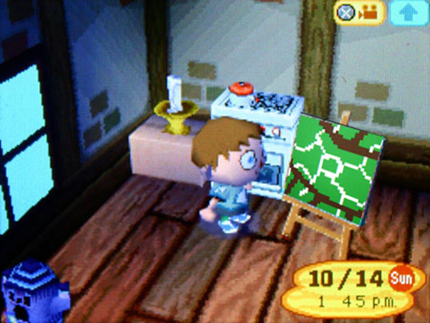
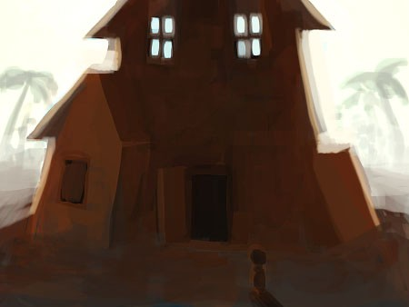
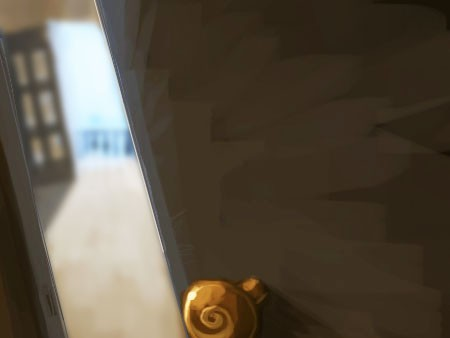
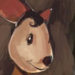
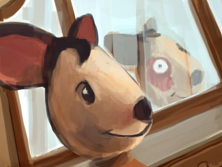
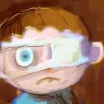
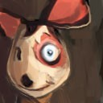
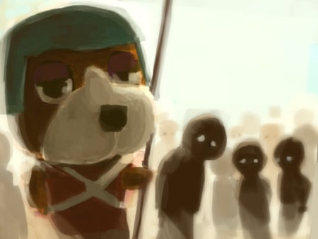
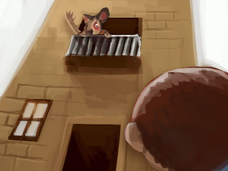

Я понял, как одинок я на самом деле.
Сначала я ещё надеялся, что смогу подружиться с кем-то из жителей. Потом были гироиды — глупо, но я мог хотя бы притворяться. Потом Пенни. А теперь я понял, что единственным моим другом был тот, кого я ненавидел всё это время. И я сам его почти убил.
Может, мне удастся сбежать. Может, мне повезёт больше, чем Тому, и я уйду ночью, проплыву сотни миль в нужную сторону, не сдохну в океане и доплыву до страны, где меня отправят домой. А может, меня поймают, изувечат и вернут в лагерь, чтобы какая-то чокнутая тварь забрала мои органы.
Нет. Выход был только один.

Я нашёл дорогу к дому в центре острова по карте подземелий, которую прислала «Пенни».
Дом — это слабо сказано. Это был настоящий особняк. Я вылез из туннеля сзади и увидел его тёмный силуэт, очерченный тусклым ореолом солнца. С другой стороны доносился гул — как от большой толпы. Интересно, все жители собрались там? И зачем? Даже просто выглянуть было бы самоубийством. Но мне повезло: задняя дверь была открыта, как пасть огромного злого гироида, готового меня проглотить.

Неужели Том оставил эту дверь для меня?
Назад пути не было. Руки болели после того, как я вцепился в топор.
Внутри дома был полный разгром. Пол усеян мусором, мебель сломана и прижата к стенам с ободранными обоями. В тёмной прихожей не горело ни одной лампы. Планировка была как у всех домов в лагере, только этот был в несколько раз больше. Я знал, где искать Пенни. Я поднялся на третий этаж.
Дверь спальни была приоткрыта, и оттуда доносились шаги. В щель я видел большие французские двери в противоположном конце комнаты — они были распахнуты на балкон.

Похоже, Пенни собиралась что-то вещать толпе, как сумасшедший диктатор.
У меня волосы на затылке встали дыбом. Я правда собираюсь это сделать? Я даже не знал, что именно… ворваться, изрубить её в фарш и попытаться удрать через туннели, пока никто не заметил? Разумных вариантов не осталось — осталось только действовать.
Я толкнул дверь, и она со скрипом открылась. Я увидел её. Она сидела у зеркала и поправляла своё… лицо…

Пенни:Том, милый, это ты? Ты привёл того мальчика? ЗАЧЕМ ТЫ ЕГО РАНИЛ?!
Голос сменился с нормального на безумный — с той комиксовой злобой. Она повернулась и встретилась со мной взглядом в зеркале. Я чуть не рухнул.

Её лицо… разваливалось. Болезнь пожирала её заживо. Один глаз был чёрный, как у мыши, но второй… блядь, это был мой глаз.
Голова закружилась. Ноги подкосились.
Я собрался в последний момент. Я молил, чтобы это кончилось. Слова застряли — я не знал, чего хочу сказать.

Билли:Том… мёртв. Я убил его.
Пенни:Мёртв? Вот чёрт, этот ушлёпок, вечно влипает в неприятности. И где мне теперь найти ребёнка, который любит енотов? Может, в Небраске…
Её уже ничего не волновало. Полностью сошла с ума.
Билли:Я… я убью тебя, Пенни.
Я поднял топор, стараясь выглядеть как можно угрожающе, — всё, на что был способен грязный, голодный ребёнок. В этот момент из толпы внизу донёсся крик. Все глаза устремились на сцену, разыгрывающуюся в спальне.

Пенни:Да, дорогой, всё хорошо, подожди ещё немного. Нельзя заставлять толпу ждать, правда? Нельзя. И как хорошо, что ты здесь.
Моё сердце замерло на миг. О БОЖЕ… что же я наделал? Том знал, что здесь происходит. Он сказал мне бежать, потому что знал: все собрались здесь, и пройдёт много времени, прежде чем они начнут меня искать. У меня был реальный шанс, говорил он… Он знал, что здесь произойдёт, и это было настолько ужасно, что он предпочёл умереть, чем быть частью этого.
Я был так сосредоточен на чудовище, которым стала Пенни, что не заметил её личных сторожевых псов, маячивших в тени позади меня. Они схватили меня за руки с неестественной силой, выкручивая топор из моих пальцев. Он с глухим стуком упал на пол, и я смотрел на него, как парашютист, у которого отказал парашют.
Пенни:Давай, Билли. Будет весело!
Стражи потащили меня вниз по лестнице, пока Пенни обращалась к толпе с балкона. Я слышал, как её голос доносился приглушённо сквозь стены, но было трудно разобрать целые предложения.
Вот что я смог уловить: она была очень расстроена тем, что её документы и дневник были украдены. Она не знала, кто это сделал, но собиралась узнать, и я должен был помочь. Она приказала всем… построиться?
Мы вышли из здания, и яркий солнечный свет ударил в глаза, делая фигуры передо мной расплывчатыми и неразличимыми, пока глаза не привыкли.

Передо мной выстроились дети. Большинство плакали, некоторые смотрели в пустоту. У кого-то не было ног, у кого-то — ушей, а чего-то ещё я даже не мог разглядеть. Их держали сторожевые псы, а жители лагерей стояли позади и смотрели. Я пытался держаться, но у меня было жуткое чувство, что я знаю, что должно случиться.
Пенни закричала мне с балкона, как баньши:
Пенни:НУ ЧТО, БИЛЛИ? Будь так любезен сказать мне, кто из твоих друзей здесь украл мои вещи?
Она не знала. Она не могла осознать, что Том предал её, и теперь кто-то заплатит за его дела. Времени на раздумья не было.
Билли:Это я! Это всё я! Не трогай их! НЕ ТРОГАЙ ИХ!
Пенни:Такой храбрый, но такой же несчастный, Билли. Ты уже поплатился за свой проступок, не заставляй меня добавлять ложь к твоим наказаниям. Я знаю, что ты был в своём лагере, так что это не мог быть ты. У меня много дел, и мне надо прямо сейчас узнать, кто же переслал тебе те документы, Билли.
Билли:Это был Том! Том всё устроил! Он во всём замешан! Пожалуйста… отпусти невинных людей…
Пенни указала на первого ребёнка в ряду. Охранники, хоть и испуганные, но покорно подчинились. Они потащили его, кричащего, в заднюю часть дома. Пенни развернулась и ушла с балкона. Прошло несколько минут, и воздух разорвали душераздирающие вопли.
Крики резко оборвались.
Из дома донеслись глухие шаги — кто-то тяжело поднимался по лестнице. Пенни вернулась на балкон со своим трофеем. Она протянула руку… и помахала оторванной рукой, которую держала в ладони.

Пенни:Посмотрите, Гарольд машет вам ручкой на прощание. А теперь, может, скажешь правду, Билли?
Толпа охнула, дети в панике кричали, цепляясь за свою жизнь. Меня скрутило, я пытался блевануть, но в желудке было пусто.
Это слишком. Я не мог этого вынести. Она заставляла меня выбирать, кого убить, как скотину, и если я не скажу ей то, что она хочет услышать, она перетаскает каждого из этих детей за дом… она устраивает шоу, чтобы все запомнили: никто не смеет ей перечить.
Пенни:Подумай как следует на этот раз, хорошо?
В голове пустота. Мы все здесь сдохнем. Безумная тварь выпотрошит нас до последнего. А потом новые дети разделят ту же участь.
И так будет продолжаться до скончания веков.